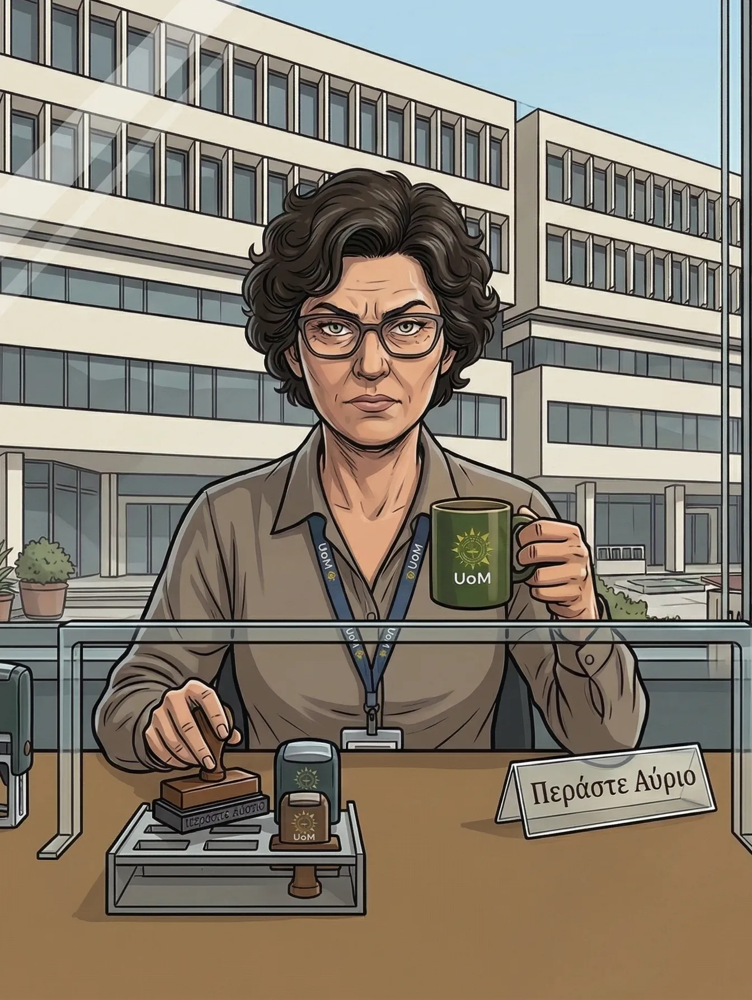
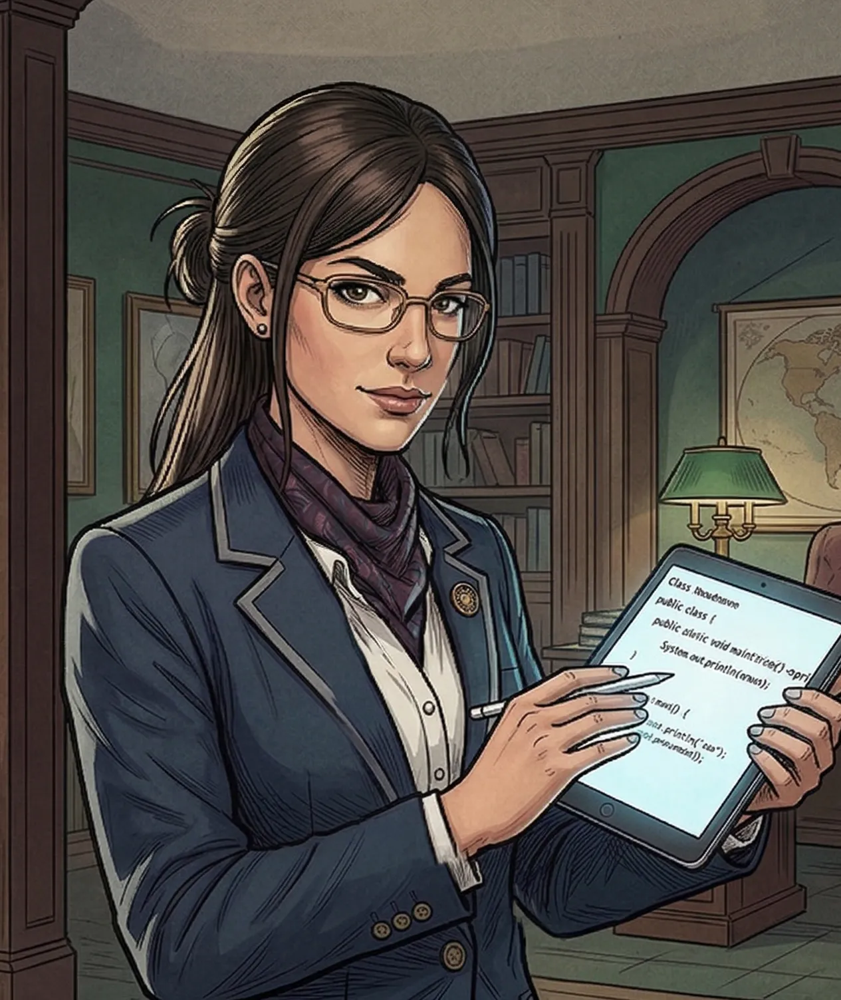
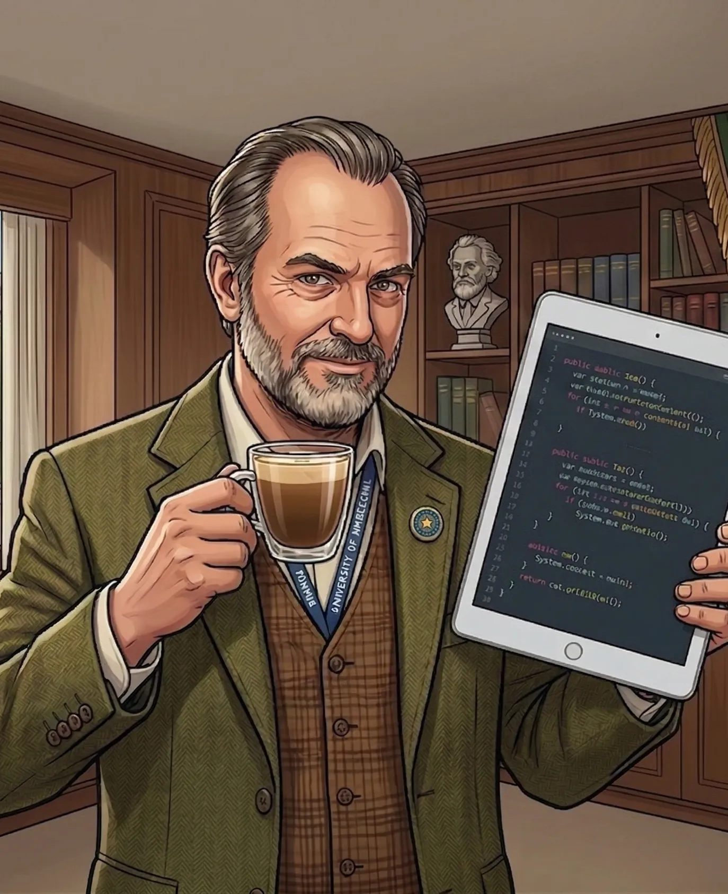

Μπορεί να είσαι πρωτοετης όμως μόλις ανέλαβες την πιο μυστήρια υπόθεση του Πανεπιστημίου.
Όνομα Πράκτορα:
Ο θρύλος του τμήματος (14+ έτη). Έχει τη δική του καρέκλα στο αμφιθέατρο και ξέρει τους τοίχους με το μικρό τους όνομα.
Κίνητρο: Ο Δρ. Κατσούφης του
ανακοίνωσε ότι θα τον διαγράψει
οριστικά λόγω των συνεχόμενων
μηδενισμών, βάζοντας τέλος στη
"φοιτητική" του ζωή.

Η "σιδηρά κυρία" της Γραμματείας. Ελέγχει τα πάντα από το γραφείο της με ένα μόνιμο ύφος "περάστε αύριο".
Κίνητρο: Ο Κατσούφης ανακάλυψε ότι
η Λίτσα άλλαζε βαθμούς σε "δικά της"
παιδιά στο σύστημα (Παραβίαση
Απορρήτου - Άρθρο 3) και θα την
κατήγγειλε.

Η κορυφαία του έτους με μέσο όρο 9.9. Δεν έχει βγει από τη βιβλιοθήκη από το 2022.
Κίνητρο: Ο Κατσούφης της
στέρησε το απόλυτο 10 (και την
υποτροφία) για ένα λάθος
στοίχισης στον κώδικα,
προκαλώντας της την πρώτη
"αποτυχία" της ζωής της.

Ο ανταγωνιστής καθηγητής. Διορθώνει τους πάντες και θεωρεί τον εαυτό του τη μόνη αυθεντία.
Κίνητρο: Ο Κατσούφης είχε βρει
αποδείξεις λογοκλοπής στη διατριβή
του Ξερόλα. Με τον Κατσούφη εκτός,
Ξερόλας σώζει την καριέρα του και
παίρνει την έδρα.
Η αιώνια συνδικαλίστρια. Πάντα με μια ντουντούκα στο χέρι και έτοιμη για κατάληψη.
Κίνητρο: Ο Κατσούφης πρότεινε την
επιβολή κάρτας εισόδου και την
κατάργηση των παρατάξεων. Για τη
Ράνια, ο Κατσούφης ήταν "ταξικός
εχθρός" που έπρεπε να σταματήσει.
Ο PR-άς των events. Ξέρει κάθε club της Θεσσαλονίκης αλλά κανένα εργαστήριο.
Κίνητρο: Ο Κατσούφης τον έπιασε να
πουλάει εισιτήρια για πάρτι μέσα
στο μάθημα και εισηγήθηκε την
πειθαρχική του δίωξη.